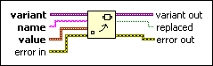
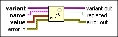

Set Variant Attribute Function
Owning Palette: Variant VIs and Functions
Requires: Base Development System
Allows you to change or create an attribute and value for variant data.

 Add to the block diagram Add to the block diagram |
 Find on the palette Find on the palette |
Owning Palette: Variant VIs and Functions
Requires: Base Development System
Allows you to change or create an attribute and value for variant data.

| Add to the block diagram |
Find on the palette |
 |
variant is the variant data you want to create an attribute and value for or replace a value for. |
 |
name is the name of the attribute you want to edit or create. If name matches an attribute, this function replaces the attribute with the value specified. If name does not match an attribute, this function creates a new attribute. If name is an empty string, this function returns error code 1 because an empty string triggers a special behavior in the Delete Variant Attribute function. |
 |
value is the value of the attribute. This input is polymorphic, so you can wire any data to it. |
 |
error in describes error conditions that occur before this node runs. This input provides standard error in functionality. |
 |
variant out is the variant data with new attributes. |
 |
replaced is TRUE if an attribute and value were replaced. |
 |
error out contains error information. This output provides standard error out functionality. |